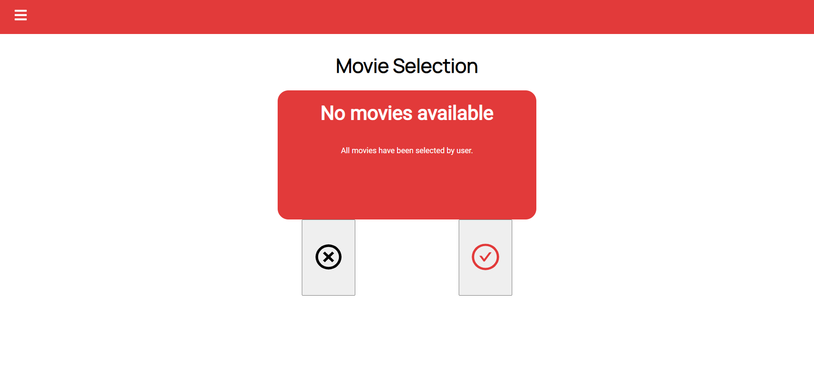
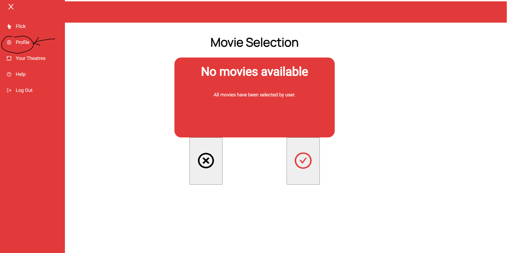

User Guide
Step 1: Signing Up/Logging In
If you don’t have an account, sign up by entering a username and password. The username must be a unique field. Should an existing username be entered, a prompt will appear to inform the user to select a different username. The password must also be between 8 - 16 characters long. If you have successfully created an account, you will be redirected to the Login page.

If you have an account already, sign in with your user credentials that were created when signing up.

Should the wrong credentials be inputted, an error message will appear informing the user.
Step 2: View Your Theatres
Once you sign in, you will be redirected to a page with all the Theatres that you are a part of. The names of the Theatres that you are in will appear on the left-hand side of the screen.
If you are not in any theatres, you can click the Create Theatre button that will redirect you to the page where you can create one. Theatre names must be between 3 - 25 characters long. Clicking on a theatre box will direct you to the information relating to that theatre.

Once you have created or joined a theatre, you will be able to view details about a specific theatre by clicking on the theatre name. The list of watchers (users in your theatre) and the list of movie matches will appear. The movie matches contains a list of movies that all users in the theatre have liked.

Step 3: Add Members to Your Theatre
To add watchers in your theatre, click the Invite Watcher button on the previous Theatre page. You will be directed to the page below, where you can enter the EXACT username of the member you wish to add.

Step 3.1: Remove Members of Your Theatre
To remove members click the “Remove Watcher” button and input the EXACT username of a member of the theatre you wish to remove. An error message will appear should the user not exist within the theatre.


Step 4: View and Select Movies
On the Movie Selection page is where you can “Flick” through movies, liking or disliking them. **Note: Users will only be able to begin clicking through movies after they have been added to at least one “Theatre”. To go to the Movie Selection page, click the hamburger icon in the top left of the navigation bar, and then select “Flick”.
On the Movie Selection page, you can now select the X button for movies you dislike or select the ✓ button for movies you want to watch.

Should there be no more movies available in our current database a prompt will be displayed instead informing users.

Step 5: View User Profile and Notifications
To go to your profile, click the hamburger menu in the top left and select “Profile”.

The user profile page is where you will be able to view your user information as well as any of your notifications that you have received. A user can choose to change their username by clicking on the Change Username button.

Additionally, when a new member is added to one of your theatres or you are invited to a theatre, you will receive a message on the User Profile page (as seen above). You can also delete all notifications by clicking on the Clear Notification button once you have read them.
Step 6: Additional Help
If you encounter any problems while using the app, we have a Frequently Asked Questions page available to provide tips and guidance.
To go to the FAQ page, click the hamburger menu in the top left and select “Help”.
Step 7: Log Out
To sign out of Flick, navigate to the hamburger menu on the top left and click log out. Once done, you will be redirected back to the Login page.
Appendix
Authored By
08/08/2021 Version 1.0
- Amy Zhao
- Cassidy Huang
- Connor Kanalec
- Kara Kim
- Lavisha Bugreja
- Scott Baker
- Ya Jun Shao